🧪 Dynamic simulation benchmarks
This page collects cross-software validation evidence for VeraGrid’s dynamic simulation tools. It covers RMS time-domain simulation, RMS small-signal stability, and EMT Floquet stability.
For the formulation and result interfaces themselves, see RMS simulations, EMT simulations, RMS Small-Signal stability, and EMT Small-Signal stability.
A benchmark is meaningful only when both programs represent the same physical system, start from equivalent operating points, and expose comparable states. Visual agreement is useful, but it is not sufficient on its own. The studies below therefore combine trajectories or spectra with numerical error metrics and an explicit description of the comparison scope.
Benchmark map
Reference software |
VeraGrid study |
Main comparison |
|---|---|---|
ANDES |
RMS time domain |
Common physical-state trajectories, with and without an event |
ANDES |
RMS small signal |
Operating point, state matrix, eigenvalues, and participation factors |
DIgSILENT PowerFactory |
RMS time domain |
Responses of an interconnected system containing standard dynamic models |
STAMP |
RMS small signal |
Eigenvalues of an equivalent WSCC dynamic model |
STAMP |
EMT Floquet |
Rightmost continuous-time exponents derived from Floquet multipliers |
PowerSimulationsDynamics.jl |
RMS small signal |
Matched modal spectra for three benchmark networks |
The comparisons do not claim that the programs use the same internal formulation. They test whether equivalent models produce consistent physical results within the stated experiment.
How to read the results
The following quantities appear throughout this page:
Maximum absolute error is the largest absolute difference over all compared samples and states.
RMSE is the root-mean-square error over all compared samples and states.
Relative state-matrix error is .
Eigenvalue error is evaluated after matching the nearest corresponding modes. A relative percentage can become misleading for a mode very close to zero, so the absolute error and the spectrum plot must also be inspected.
Participation-factor error is meaningful only for non-repeated modes. The basis of a repeated eigenspace is not unique.
Timing values are single wall-clock observations from the recorded validation runs. They describe those runs and are not general performance guarantees. Software version, hardware, linear algebra libraries, compilation caches, and the selected solver settings can all change the result.
1. ANDES comparison
ANDES is an open-source Python framework for power-system dynamic analysis. It provides an independent reference implementation for the phasor-domain tests. The validation covers five systems of increasing size:
Case |
Compared states and modes |
|---|---|
Kundur two-area system without shunts |
8 |
IEEE 14-bus system |
56 |
IEEE 39-bus system |
130 |
NPCC 140-bus system |
334 |
WECC 179-bus system |
507 |
The comparisons use every common physical state. State names are mapped
between the two programs before values are compared. ANDES retains some
BusFreq, zero-time-constant, and limiter auxiliary states that VeraGrid folds
into algebraic equations. Those implementation-specific states are reported,
but they are not incorrectly paired with unrelated VeraGrid states.
1.1 RMS small-signal stability
The RMS small-signal study compares four layers of the calculation:
the power-flow operating point;
the exported state inventory;
the linearized state matrix and its eigenvalues;
participation factors for non-repeated modes.
All exported eigenvalues are retained. In WECC179, 21 repeated modes are included in the eigenvalue comparison and spectrum but excluded from the participation-factor norm because their individual eigenvectors can rotate within the repeated eigenspace.
Operating-point agreement
Case |
Maximum voltage-magnitude error (pu) |
Maximum angle error (rad) |
|---|---|---|
Kundur |
||
IEEE14 |
||
IEEE39 |
||
NPCC140 |
||
WECC179 |
Linearization and modal agreement
Case |
Mean eigenvalue error |
Maximum eigenvalue error |
Relative |
Relative participation-factor error |
|---|---|---|---|---|
Kundur |
0.000036% |
0.000070% |
||
IEEE14 |
0.000001% |
0.000009% |
0 |
|
IEEE39 |
0.000012% |
0.000074% |
||
NPCC140 |
<0.000001% |
0.000008% |
||
WECC179 |
0.000040% |
0.000559% |
 error
errorThe mean absolute eigenvalue errors range from for NPCC140 to for WECC179. The largest absolute state-matrix entry difference occurs in WECC179, but the matrix also contains entries of approximately 540,000. Its relative Frobenius error is therefore the more informative value: .
Eigenvalue spectra
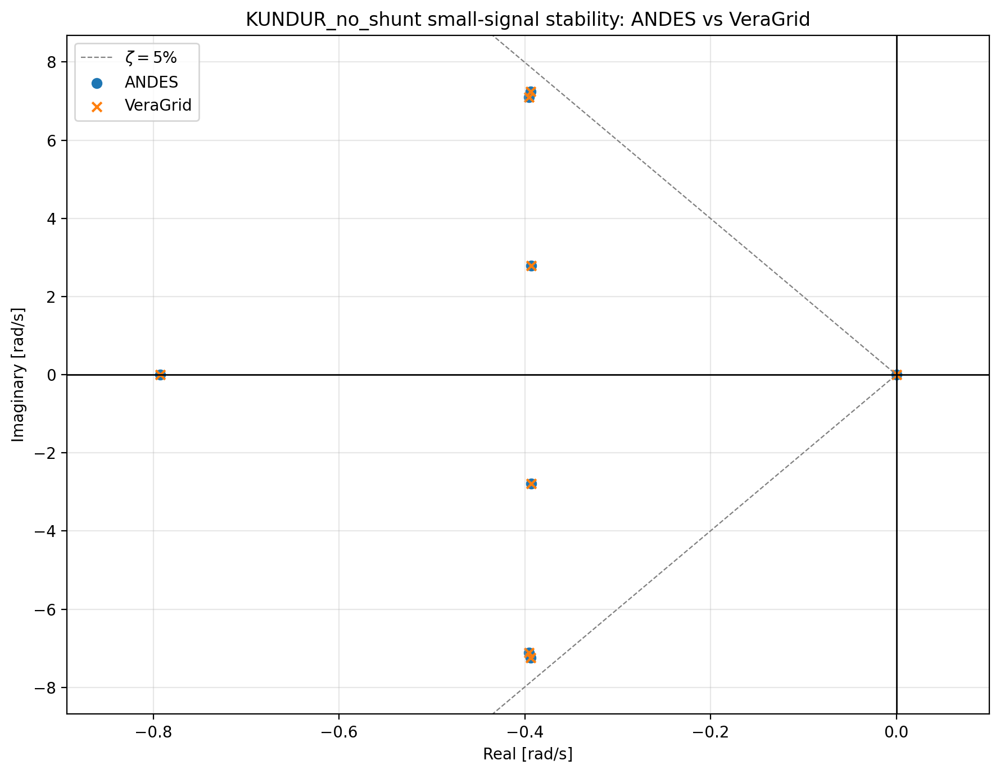
Kundur two-area system. The ANDES circles and VeraGrid crosses overlap at the resolution of the complete spectrum.
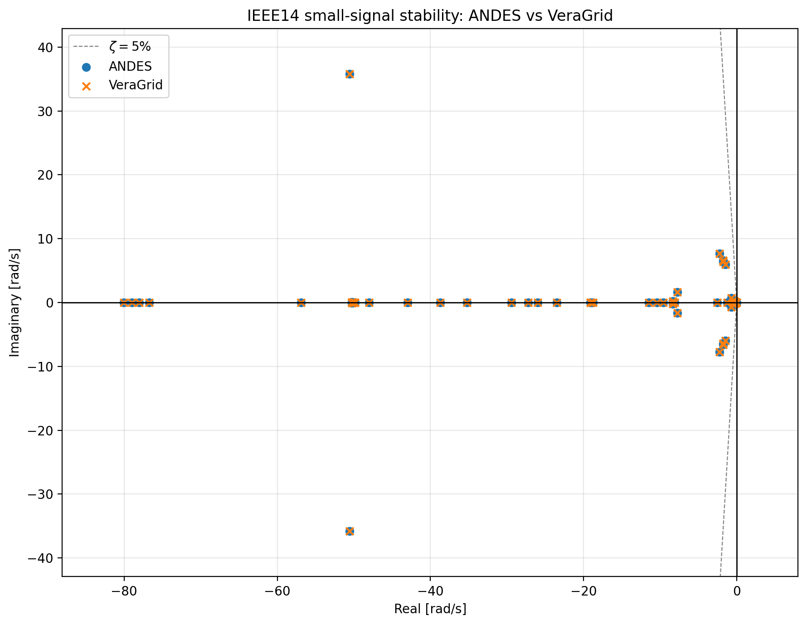
IEEE14 complete eigenvalue spectrum.
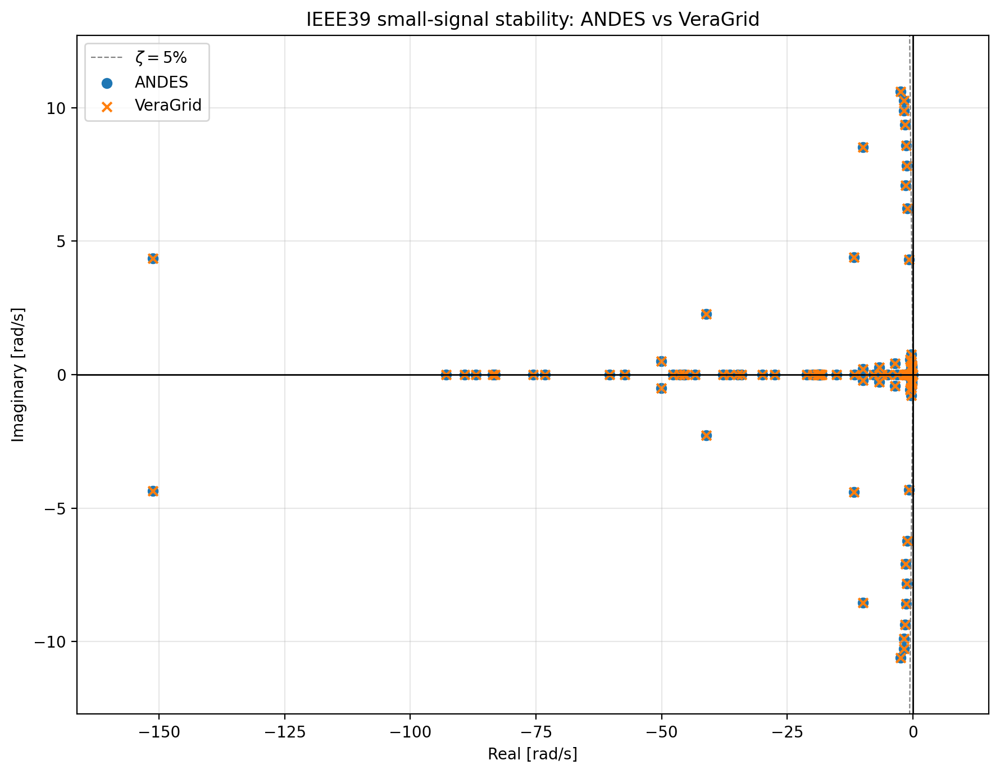
IEEE39 complete eigenvalue spectrum.
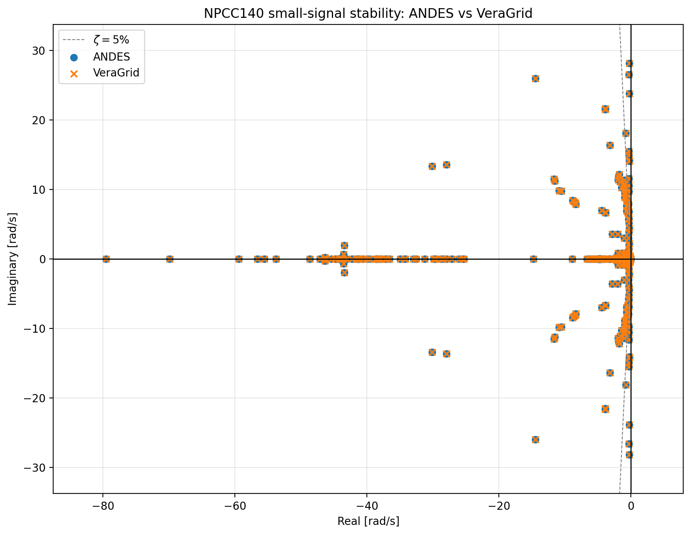
NPCC140 complete eigenvalue spectrum.
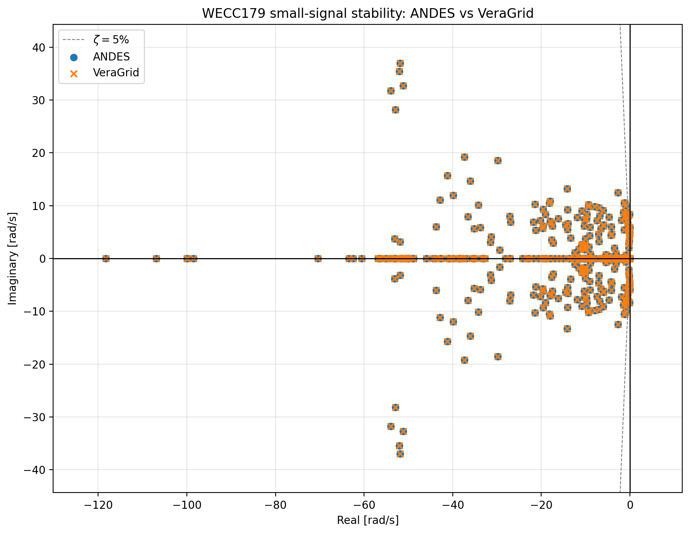
WECC179 complete eigenvalue spectrum, including the repeated modes retained in the eigenvalue comparison.
The complete spectra show the global modal agreement, while the numerical errors in the table provide the corresponding quantitative comparison near the stability boundary.
Participation-factor agreement is summarized by the relative errors in the table. Repeated WECC179 modes are excluded from this metric because their individual eigenvector bases are not unique.
Recorded small-signal timings
The complete measured workflow includes case loading or construction, power flow, dynamic preparation, numerical small-signal analysis, and result export. The production kernel isolates the numerical small-signal calculation.
Case |
ANDES total (s) |
VeraGrid total (s) |
ANDES kernel (s) |
VeraGrid kernel (s) |
|---|---|---|---|---|
Kundur |
0.647732 |
1.829239 |
0.013852 |
0.030901 |
IEEE14 |
0.614612 |
3.086192 |
0.002962 |
0.042896 |
IEEE39 |
0.779038 |
3.437096 |
0.125438 |
0.055578 |
NPCC140 |
2.544027 |
5.203009 |
0.342250 |
0.162901 |
WECC179 |
1.927876 |
6.184687 |
0.376404 |
0.281134 |
ANDES is faster for the complete recorded workflow in all five runs. VeraGrid’s small-signal kernel is faster for IEEE39, NPCC140, and WECC179, while its dynamic-model preparation and symbolic compilation dominate the complete workflow. These single runs identify where time was spent; they should be read as illustrative measurements rather than a general performance ordering.
1.2 RMS time-domain simulation
Two time-domain scenarios were compared with the fixed-step Backward Euler
method and a nonlinear tolerance of  :
:
Base response: 1 ms step, 1 s horizon, and the same
 pu initial rotor-speed perturbation on the same machine.
pu initial rotor-speed perturbation on the same machine.Event response: 1 ms step, 2 s horizon, initially unperturbed equilibrium, and an additive
pu rotor-speed-state step at s.
The event cases contain the complete requested 2,001-point time grid. No adaptive time-step reduction was accepted. Both programs solve the power flow twice: the first cold solve is a warm-up diagnostic, while the second warm solve initializes RMS and is included in the analyzed timing. File export is excluded.
Common-state trajectory agreement
Case |
Base maximum error |
Base RMSE |
Event maximum error |
Event RMSE |
|---|---|---|---|---|
Kundur |
||||
IEEE14 |
||||
IEEE39 |
||||
NPCC140 |
||||
WECC179 |
The case-level diagnostics are important for interpreting the largest number:
Kundur: the remaining difference is almost entirely a sub-microradian rotor-angle offset; rotor-speed differences are about pu.
IEEE14: the maximum residue is localized in zero-time-constant ESST3A
LAW2states. The tested TGOV1 lower-limit transition agrees to .IEEE39: the largest differences are nearly constant micro-scale offsets in governor and exciter states. They do not grow through the trajectory.
NPCC140: every common trajectory remains below absolute error.
WECC179: the largest difference is localized in ESST3A
LAW2and the IEEEG1 limiter chain. VeraGrid’s IEEEG1 template represents the normal interior-limiter regime and omits the ANDES valve-rate and anti-windup branches. The two models are therefore not globally equivalent after a limiter changes branch.
The close state matrices demonstrate local equivalence in the selected linearization branch. They do not, by themselves, prove nonlinear equivalence for every event or limiter regime.
Representative base trajectories
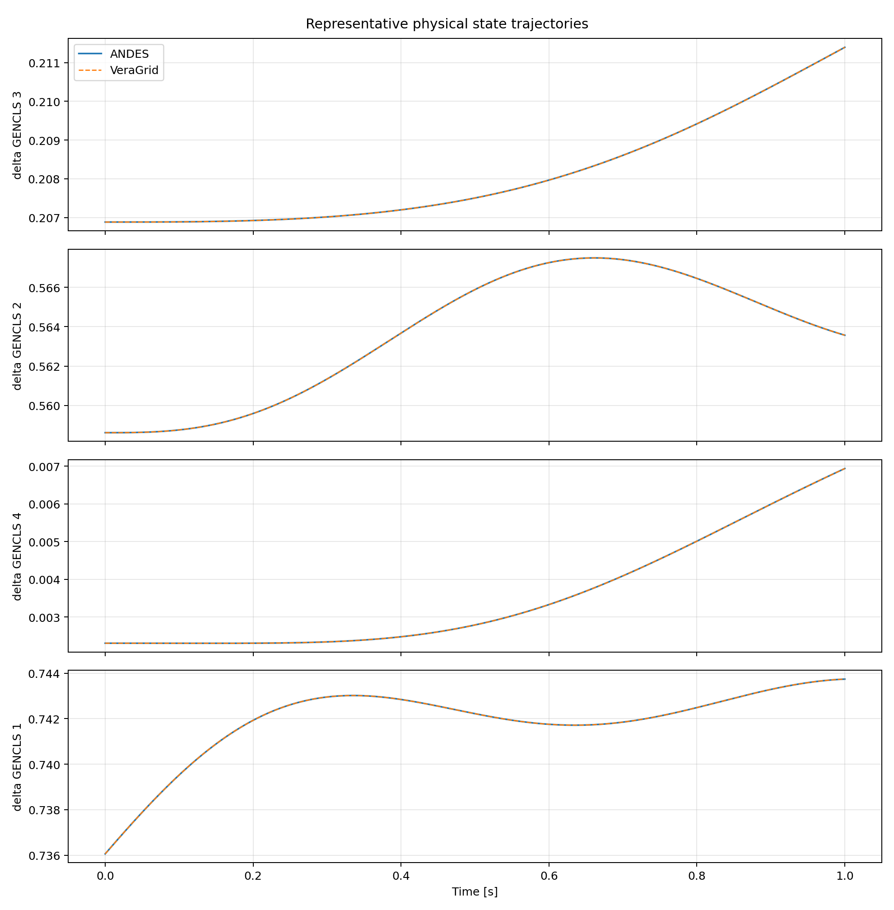
Kundur representative physical states for the 1 s base response.
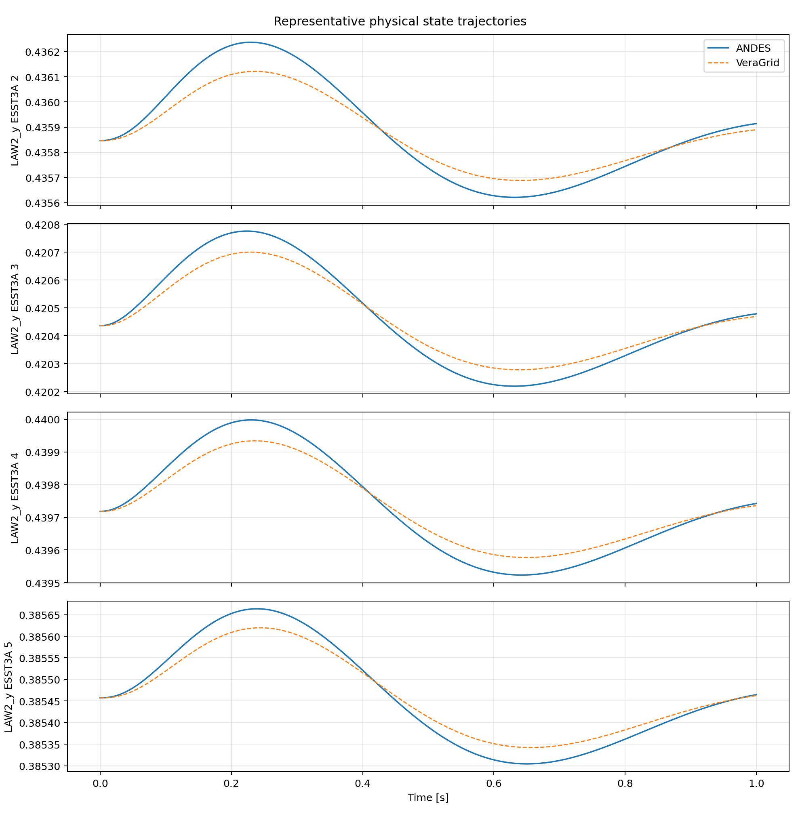
IEEE14 representative physical states. The visible ESST3A LAW2 differences
are consistent with the case diagnostics above.
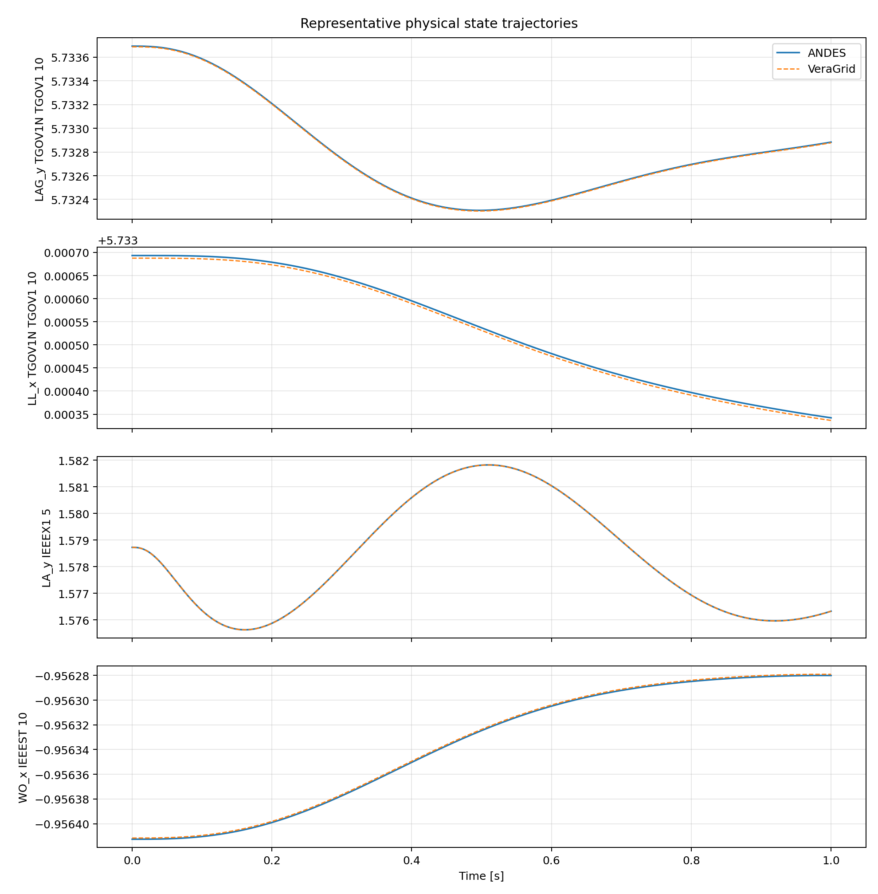
IEEE39 representative physical states. The small, nearly constant offsets do not develop into a growing trajectory divergence.
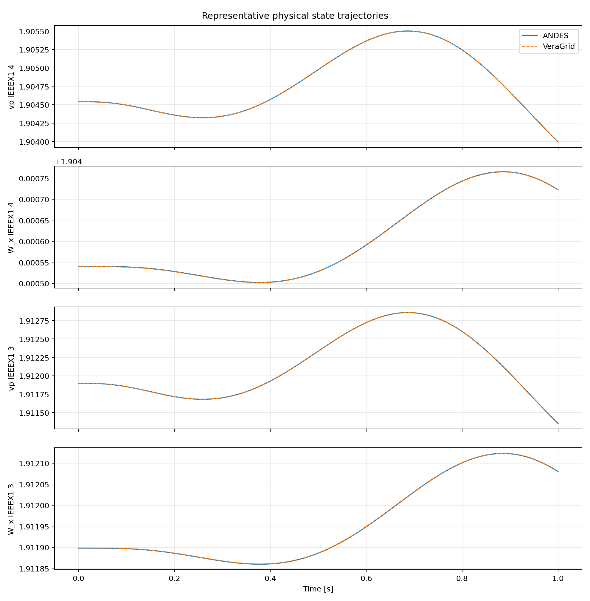
NPCC140 representative physical states.
The base-case maximum errors and RMSE values are reported in the common-state agreement table. The figures are therefore used to show the physical trajectories and their agreement, while the table provides the error scale without duplicating one additional error plot per system.
Representative event trajectory
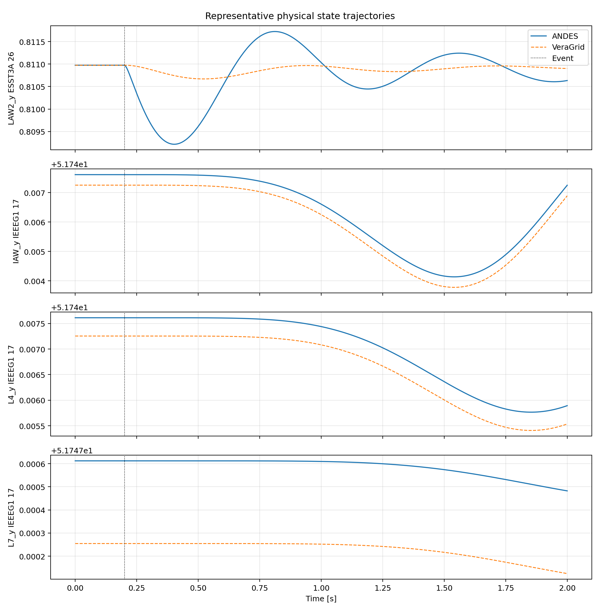
WECC179 response to the event at s. The selected states expose the documented ESST3A and IEEEG1 limiter-chain differences.
The event marker and the four most informative physical trajectories are shown directly in the figure. Their aggregate maximum error and RMSE are given in the table above, and the case-level discussion identifies the states and model branches responsible for the difference.
Recorded RMS timings
Case |
Base ANDES (s) |
Base VeraGrid (s) |
Event ANDES (s) |
Event VeraGrid (s) |
|---|---|---|---|---|
Kundur |
4.535880 |
5.057498 |
4.870898 |
5.445997 |
IEEE14 |
9.597229 |
4.081667 |
25.810310 |
9.504345 |
IEEE39 |
8.543582 |
9.962002 |
11.345670 |
31.876980 |
NPCC140 |
14.851950 |
31.331610 |
20.462640 |
61.169760 |
WECC179 |
13.882940 |
49.423460 |
58.890590 |
89.751240 |
These analyzed totals contain model setup, the warm power flow, dynamic initialization and numerical preparation, and integration. The cold power flow and result export are excluded. The winner changes with the network and scenario because total DAE dimension, Jacobian sparsity and fill-in, nonlinear iterations, factorization reuse, and model preparation all contribute.
2. PowerFactory comparison
2.1 RMS time-domain comparison
The RMS validation uses an interconnected system containing international
standard dynamic models. Multiple events are applied and equivalent output
signals from VeraGrid and DIgSILENT PowerFactory are overlaid. The recorded
study reports relative errors on the order of  for the compared
responses.
for the compared
responses.
This comparison exercises the complete workflow rather than an isolated block: network solution, model initialization, event processing, DAE integration, and result extraction.
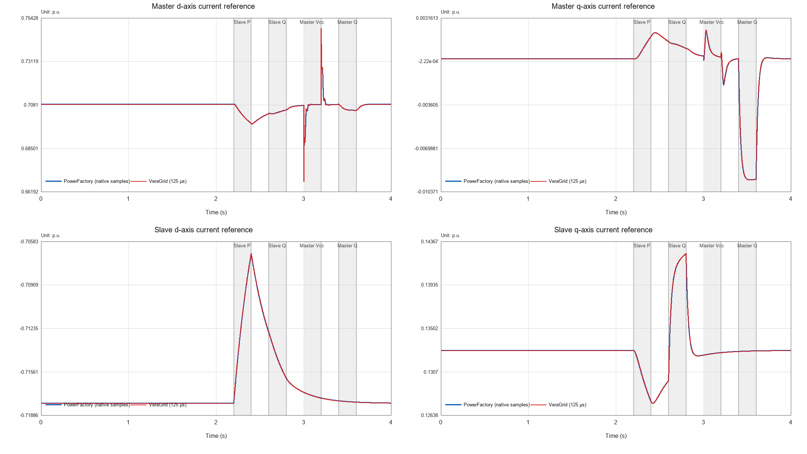
PowerFactory and VeraGrid master/slave - and -axis current-reference responses. The shaded intervals identify the applied active-power, reactive-power, and DC-voltage events.
2.2 PowerFactory DGS import coverage
The PowerFactory DGS parser was tested with approximately twelve example networks, up to 240 buses, and a scope of 56 device types. The tested cases imported successfully. This is an interoperability result rather than a dynamic-solver benchmark: it shows the range of PowerFactory network data that can be transferred into VeraGrid before carrying out a study.
3. STAMP comparison
STAMP provides a second independent implementation for modal validation. The comparison covers both an RMS equilibrium and an EMT periodic orbit.
3.1 RMS small-signal comparison
The RMS benchmark uses a WSCC system with equivalent components, network data, operating point, and dynamic equations. VeraGrid’s native grid models are replaced by fully dynamic models containing the states required for the STAMP comparison. The corresponding eigenvalue spectra coincide.
This replacement is important: comparing a native algebraic network model with a fully dynamic network realization would mix formulation differences with solver differences. The benchmark instead aligns the mathematical model before matching the modes.
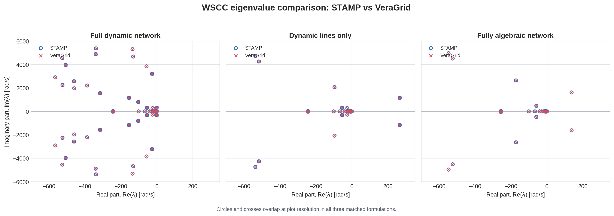
STAMP and VeraGrid WSCC spectra for a fully dynamic network, dynamic lines only, and a fully algebraic network. Circles and crosses overlap at the plotted resolution in all three matched formulations.
3.2 EMT Floquet comparison
For the EMT model, VeraGrid integrates the variational system over one complete
period to obtain the monodromy operator. Its Floquet multipliers  are
converted to continuous-time exponents using
are
converted to continuous-time exponents using
where  is the periodic-orbit period. The resulting rightmost exponents are
compared with the STAMP RMS eigenvalues.
is the periodic-orbit period. The resulting rightmost exponents are
compared with the STAMP RMS eigenvalues.
The physically important rightmost modes agree closely. Strongly damped, far-left EMT modes are less precise because their one-period multipliers are extremely small. This does not normally alter the stability conclusion. The full EMT model also contains additional modes associated with its three-phase and larger state-space representation; these have no one-to-one RMS counterpart and should not be forced into the matching set.
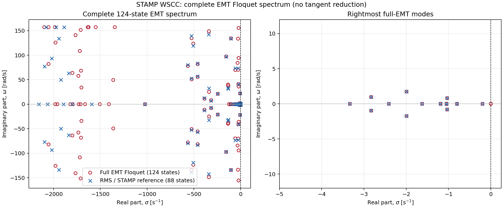
Complete 124-state VeraGrid EMT Floquet spectrum and zoom of the rightmost modes against the 88-state RMS/STAMP reference. Additional EMT-only modes are retained in the complete-spectrum panel.
4. PowerSimulationsDynamics.jl comparison
The RMS small-signal comparison with PowerSimulationsDynamics.jl uses equivalent models, network data, and operating points for three systems:
Case |
Finite modes in each program |
Recorded modal agreement |
|---|---|---|
Two-bus single-machine infinite-bus |
2 |
Maximum difference approximately |
Three-bus system |
27 |
Rightmost modes align; some internal modes show larger differences |
IEEE 9-bus system |
45 |
Median difference approximately |
Modes are paired by nearest distance in the complex plane. Equal finite-mode counts confirm that the compared state spaces have the same retained modal dimension, but mode count alone is not a validation. The rightmost-mode match, individual distances, and full spectra must be inspected together.
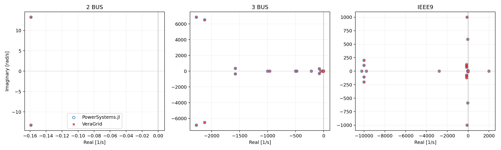
Matched spectra for the two-bus, three-bus, and IEEE9 systems. The numerical matching errors are reported in the table above.